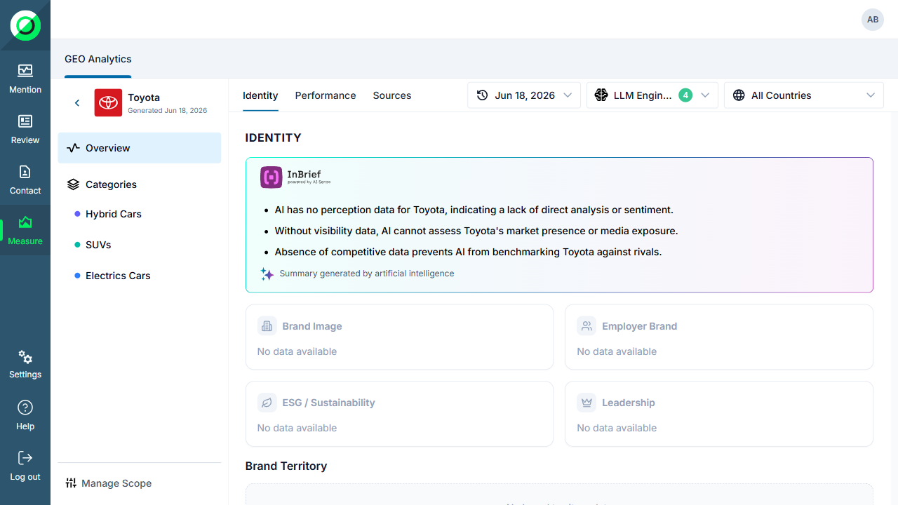
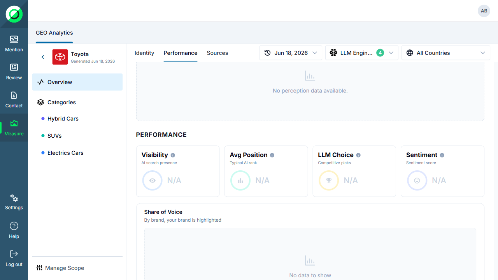
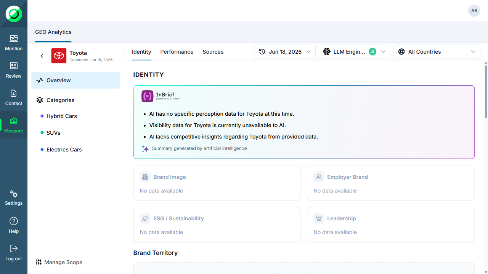
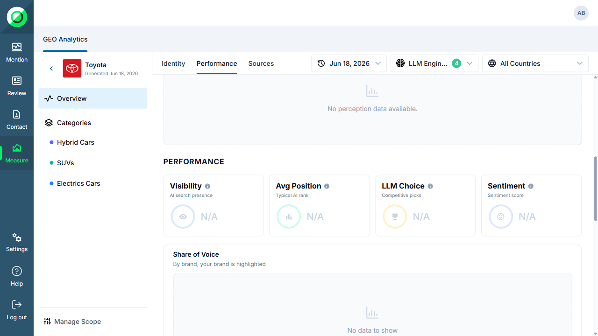
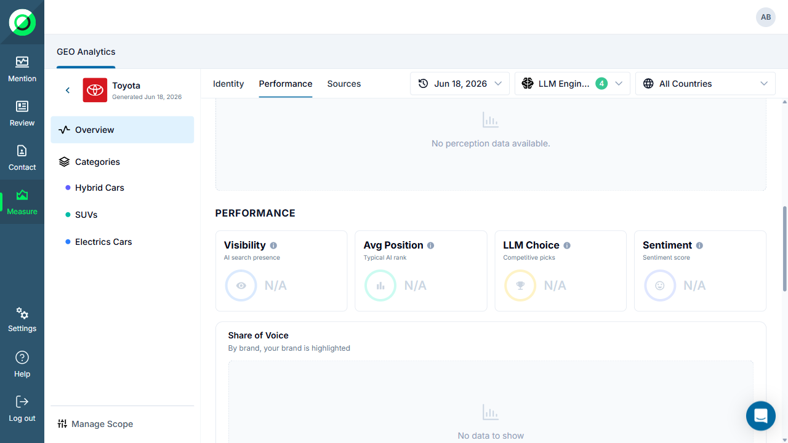
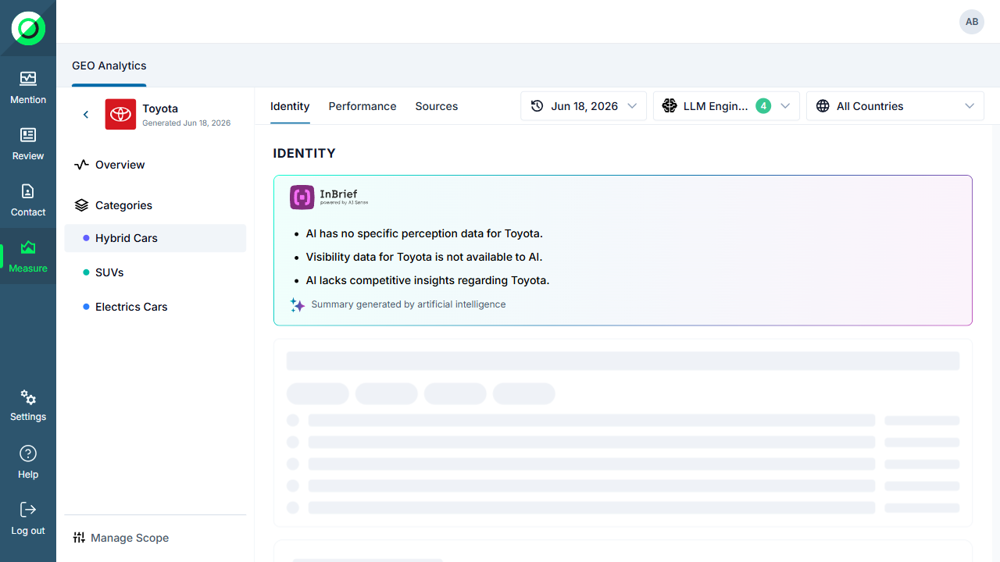
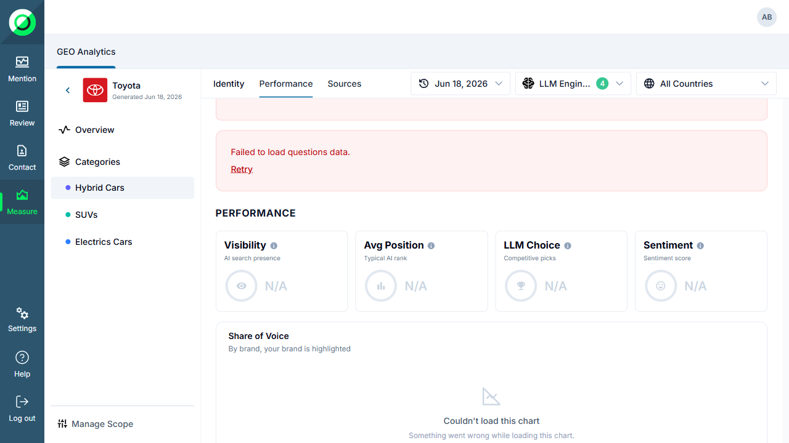
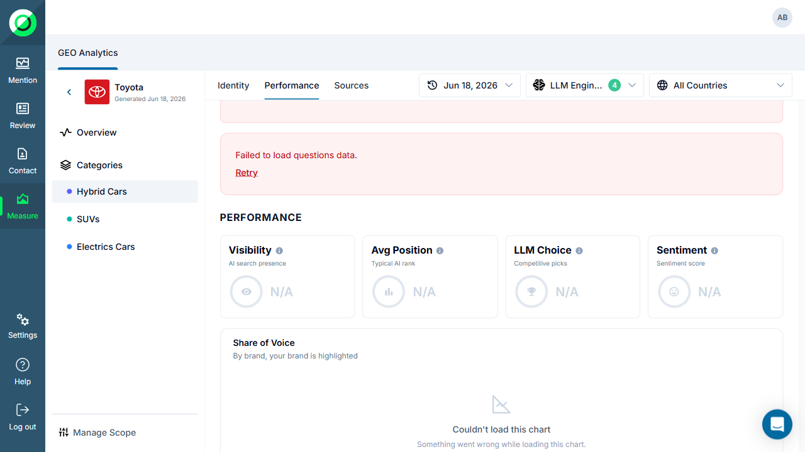

Traceabilité — TCs originaux
| Scénario E2E | TCs GEO-663 | TCs GEO-664 | Statut |
|---|---|---|---|
| E2E-GEO640-001 | TC-GEO-663-001, 003, 005, 006 | — | PASSED |
| E2E-GEO640-002 | — | TC-GEO-664-001, 003, 004 | PASSED |
| E2E-GEO640-003 | TC-GEO-663-002, 004 | TC-GEO-664-002, 009 | PASSED |
| TCs skippés (données vides staging Toyota) | SKIP — TC-GEO-664-005/006/007/008/010 | ||
►
PASSED
E2E-GEO640-001
KPI row sans SOV + Brand Rankings sans colonne SoV% (Overview)
14.5s
- Given a user is authenticated and navigates to the Overview dashboard
- When the KPI row renders in the Performance section
- Then exactly 4 KPI cards are visible (Visibility, Avg Position, LLM Choice, Sentiment) — no SOV KPI card
- And the Brand Rankings table has no SoV% column header

step1_given — Page Overview chargée
step2_when — KPI cards rendues

step3_then — 4 KPIs visibles, pas de SOV card
►
PASSED
E2E-GEO640-002
Carte SOV dédiée : heading, subtitle et état chart (Overview)
12.7s
- Given a user is authenticated and navigates to the Overview dashboard
- When the page finishes loading and the Performance section is visible
- Then a dedicated "Share of Voice" card is visible below the KPI row with title and subtitle

step1_given — Overview chargée

step2_when — Section Performance visible

step3_then — SOV card heading + subtitle visibles
►
PASSED
E2E-GEO640-003
Carte SOV sur Category view + réactivité au filtre LLM
16.4s
- Given a user is authenticated and navigates to a Category page (Hybrid Cars)
- When the Category page finishes loading and the Performance section is visible
- Then the Category page shows 4 KPI cards (no SOV) and a dedicated SOV card below
- And when the LLM filter is changed, the page updates (SOV card reacts)

step1_given — Category page chargée

step2_when — KPI cards visibles sur Category

step3_then — SOV card + réactivité filtre LLM vérifiées